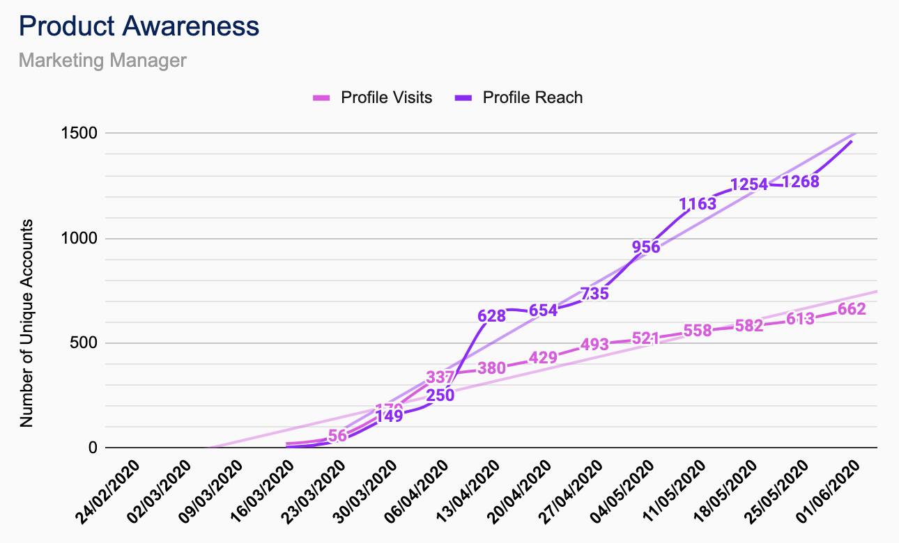
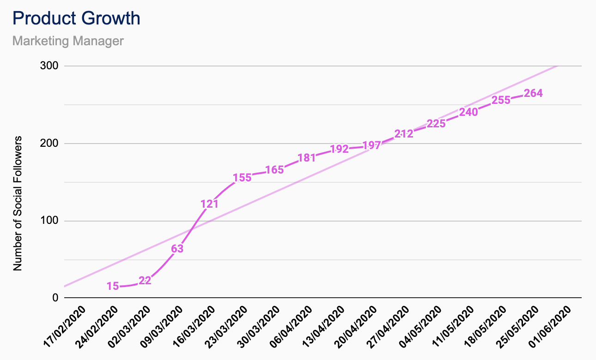
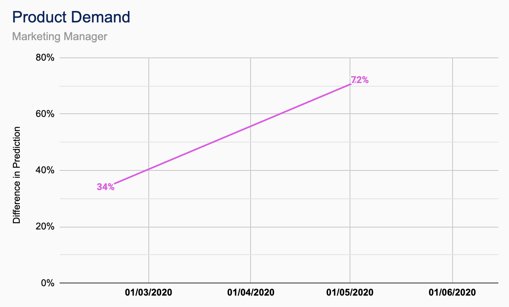
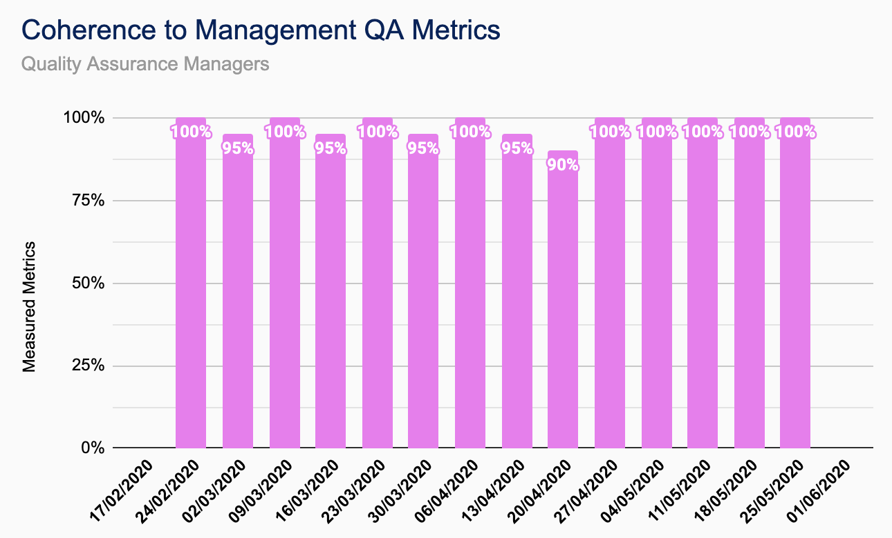
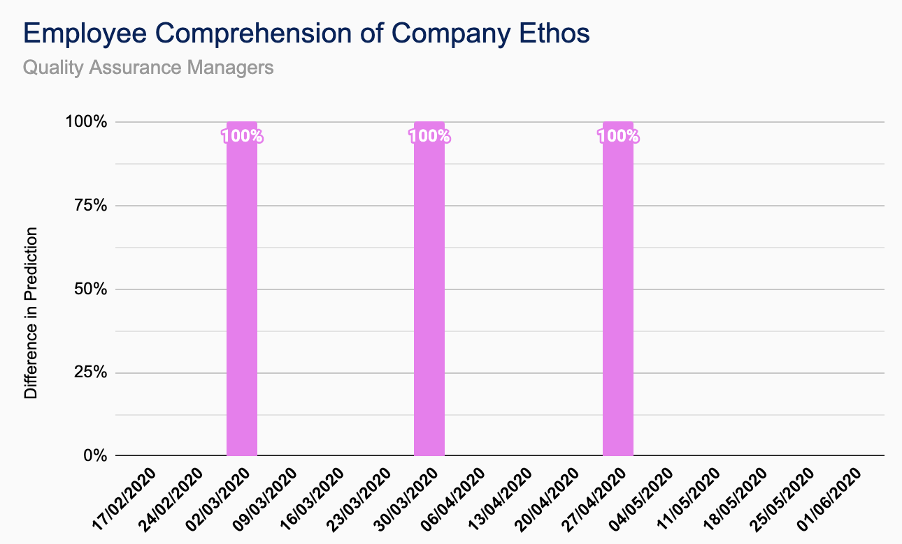
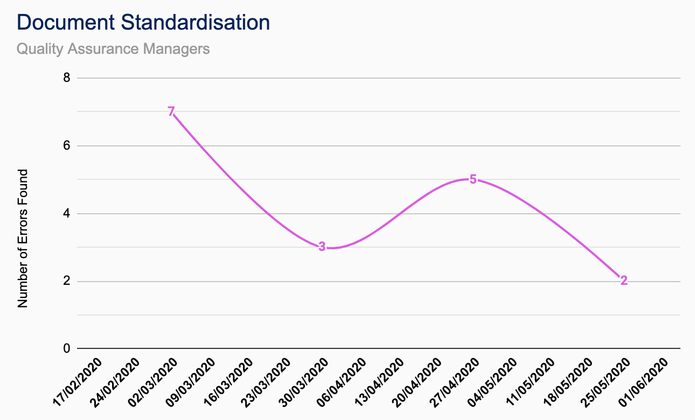

Cameron Smith
Marketing Manager &
QA Manager
Joined: Sept. 2019
Related Projects: TutorPoint
Education: MEng Electronic Engineering
As part of CUBIXEL . . .
. . . I'm involved with the marketing of the products produced by CUBIXEL, with the objective of growing brand and product awareness. As Marketing Manager for CUBIXEL, I am responsible for developing and implementing all strategic and tactical marketing initiatives and plans, in line with company objectives. As QA Manager I help to develop and maintain our company QA manual and metrics, ensuring that we are consistently meeting our exacting standards and delivering real customer value.
For TutorPoint . . .
. . . I've been responsible for the creation of the TutorPoint branding, comprising its name, logo and colour scheme. I have also been responsible for the development and implementation of all marketing initiatives and strategies undertaken by CUBIXEL on the behalf of TutorPoint; such strategies have involved the design and maintenance of the product social media.
Outside of work . . .
. . . I enjoy staying physically active by playing a wide variety of sports, such sports include rugby, football and tennis, just to name a few. I also have a keen interest in cooking, trying new recipes or coming up with my own; I particularly resonate with the likes of Gordon Ramsey.
Favourite programming language?
Java.
Contributions
| Documentation |
|---|
| CUBIXEL QA Manual |
| CUBIXEL QA Metric Tracker |
| TutorPoint Functional Specification |
| TutorPoint Financial Business Plan |
| TutorPoint Marketing Strategy |
| TutorPoint |
|---|
| Client-side Whiteboard Module |
| Server-side Whiteboard Module |
| Other |
|---|
| CUBIXEL Name and Logo Design |
| TutorPoint Name and Logo Design |
| Social Media Development and Maintenance |
| HTML Website Development |
TutorPoint Breakdown


QA Metrics
-

Product Awareness - Profile Visits
The total number of people that have visited/ viewed the product social media account over the period of a week. -

Product Awareness - Profile Reach
The total number of people that have viewed/ interacted with any of the posts made by the product social media account over the period of a week. -

Product Growth
The total number of people following the product social media account at the time of measurement. -

Product Demand
Percentage of surveyed people currently using or looking for the product or similar products, measured at the beginning and end of the development period. -

Coherence to Management QA Metrics
Use the assess the ‘QA Metric Testing’ document and check that all QA Metrics have a test and are being satisfied. This should be done at the end of every iteration, measured as a percentage of metrics being currently assessed. -

Employee Comprehension of Company Ethos
Complete random audits once every four weeks on one member of the team using the ‘Team Checker’ document. Number of non-compliances noted and raised if necessary. -

Document Standardisation
Company documents proofread every other iteration with any issues noted and raised. Number of non-compliances recorded and highlighted on the ‘Document Checker’ document.